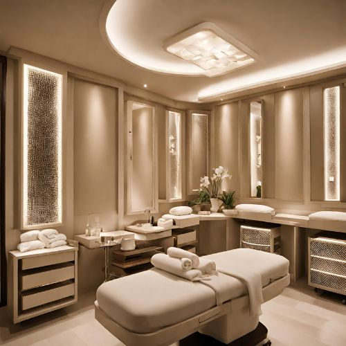

Indulge in the ultimate relaxation experience with our Signature Body Massage at Taj Radiance Spa. Our skilled therapists will tailor the massage to your specific
needs, ensuring a personalized and rejuvenating session.As you sink into the plush massage table, let the stresses of daily life melt away as our therapist begins with gentle strokes to ease
tension and promote circulation.Using a combination of Swedish and deep tissue techniques, they'll work to release tight muscles and alleviate any areas of discomfort.

Enhance your experience with your choice of aromatic essential oils, carefully selected to enhance relaxation and promote overall well-being.The soothing scents will envelop you, transporting you to a state of pure tranquility.
Throughout the massage, our therapists will pay special attention to your comfort and preferences, adjusting pressure and focus areas as needed to ensure a truly customized experience.Feel the tension melt away and emerge from your session feeling refreshed,
rejuvenated, and ready to take on the world. Treat yourself to our Signature Body Massage and discover the bliss of pure serenity.
As you step into the dimly lit massage suite, the soothing scent of lavender and ylang-ylang essential oils fills the air, instantly transporting you to a state of tranquility. Soft music plays in the background, creating a serene ambiance that allows you to fully surrender to the skilled touch of our experienced massage therapists.
Lying comfortably on the plush massage table, you'll feel your muscles begin to unwind as your therapist starts with long, gentle strokes to warm up the body. Gradually, the pressure increases as they incorporate a blend of Swedish and deep tissue techniques, targeting areas of tension and discomfort.

.jpg)